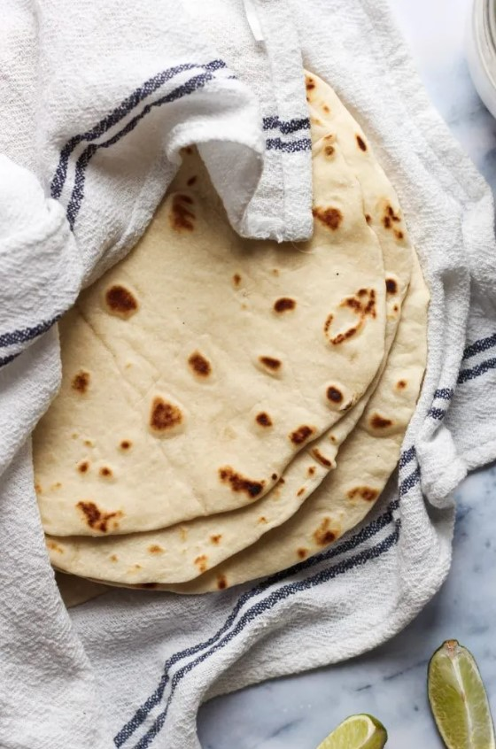

Tortillas

Description
Flour tortillas are a staple in Mexican and Tex-Mex cuisine. These soft, pliable flatbreads
are made from just a few simple ingredients - flour, water, fat, and salt. The dough is
kneaded, then rolled out into thin rounds and cooked on a hot griddle or pan until lightly browned.
Flour tortillas are incredibly versatile - they can be used as a wrap for tacos, burritos,
quesadillas, and more. The dough can also be cut into wedges and fried to make crispy
tortilla chips. Homemade flour tortillas are far superior to store-bought in both flavor and
texture. With just a little bit of time and effort, you can enjoy freshly made tortillas that are
soft, chewy, and utterly delicious.
This recipe will walk you through the easy steps to make your own homemade flour
tortillas from scratch. Let's get started!
Ingredients
- 2 cups all-purpose flour
- 1 teaspoon salt
- 1/4 cup vegetable shortening or lard
- 3/4cup warm water
Steps
- In a large bowl, whisk together the flour and salt. Cut in the shortening using a pastry cutter or two forks until the mixture resembles coarse crumbs.
- Slowly pour in the warm water while stirring the mixture with a fork. Continue mixing until a mildy sticky dough forms.
- Turn the dough out onto a lightly floured surface and knead for 2-3 minutes until smooth and elastic. Cover and let rest for 30 minutes.
- Divide the dough into 12 equal pieces. Roll each piece into a smooth ball.
- Using a rolling pin, roll each dough ball out into a thin, round tortilla, about 6-8 inches in diameter.
- Heat a large skillet or griddle over medium-high heat. Cook the tortillas one or two at a time, for 30-60 seconds per side, until lightly browned and puffed up.
- Stack the cooked tortillas and cover with a clean kitchen towel to keep them warm and soft until ready to serve.
Enjoy your fresh, homemade flour tortillas! They are delicious on their own or used for tacos, burritos, quesadillas and more.